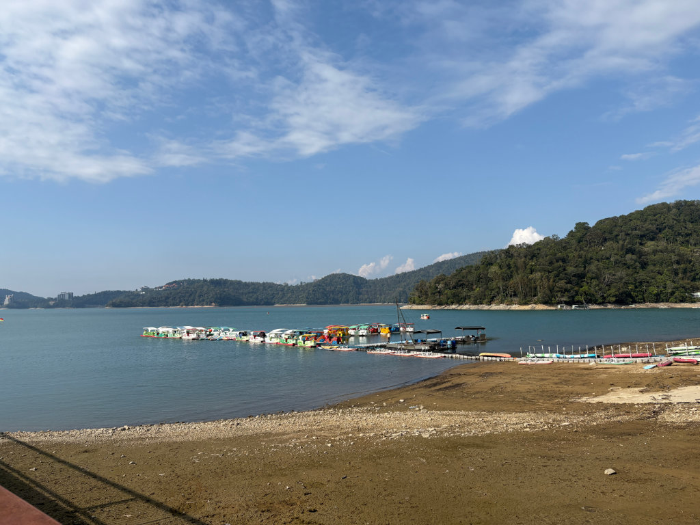

隊伍選擇與計分區
請先點擊上方卡片選擇您的隊伍，再開始探索站點！
19 個互動站點
日潭、月潭停留點：小知識補充包
當走到有太陽或月亮符號的紅色停留點時，可以任選一個小知識補充包答題，答對者加30分。
歡樂大禮包
當玩家抽到機會任務中的加分卡時，可任選一個歡樂大禮包加分，試試手氣可以加幾分。 * 注意：每個禮包全場僅限領取一次，先搶先贏！

南投縣戶外教育及海洋教育中心 & 國立臺中科技大學 共同合作
圖片來源：交通部觀光署日月潭國家風景區管理處請先點擊上方卡片選擇您的隊伍，再開始探索站點！
當走到有太陽或月亮符號的紅色停留點時，可以任選一個小知識補充包答題，答對者加30分。
當玩家抽到機會任務中的加分卡時，可任選一個歡樂大禮包加分，試試手氣可以加幾分。 * 注意：每個禮包全場僅限領取一次，先搶先贏！